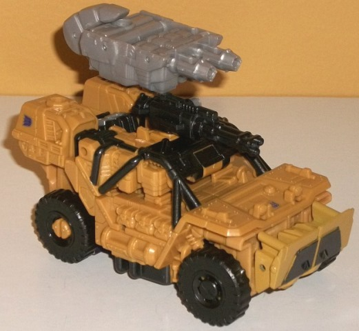
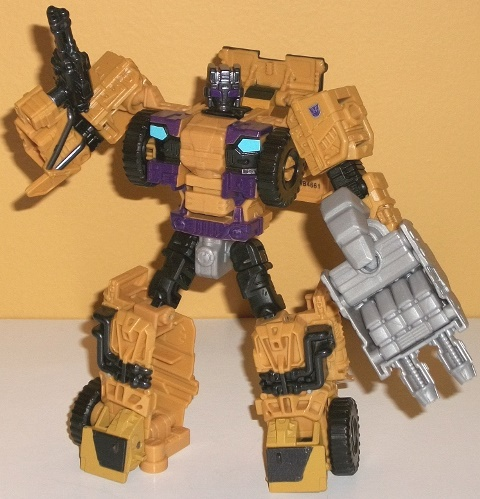
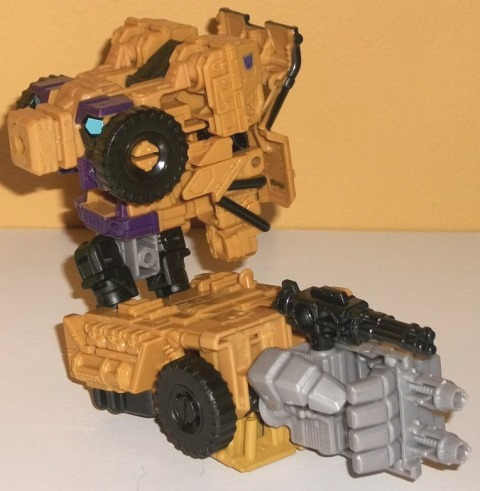
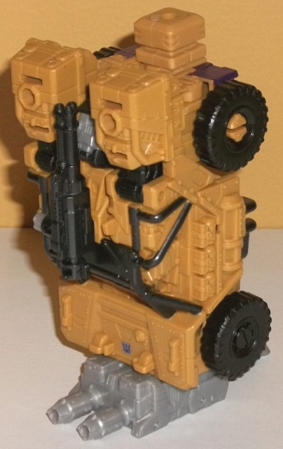

Allegiance
: Decepticon
Size
: Deluxe
Difficulty of Transformation to Robot
:
Easy
Difficulty of Transformation to Leg
:
Very Easy
Difficulty of Transformation to Arm
:
Very Easy
Color Scheme
: Tan, black, and some
dark purple, sky blue, light milky gray, and metallic charcoal black
Rating
: 8.9
(NOTE: Because this is a repaint, this is not a full-blown review. This mainly covers any changes made to the mold and the color scheme, and merely compares it to Combiner Wars Rook. For a review on the mold itself, read the review of Combiner Wars Rook here .)


Swindle-- like some
other CW deluxes such as
Streetwise
-- uses
the same transformation, articulation, general proportions, and a few of
the same pieces as a predecessor (in this case Rook), but nearly all of
his pieces have been "re-shelled" to give him a new-looking vehicle mode
and a fairly newish-looking robot mode. (The only obvious pieces that are
shared with Rook without any remolding at all are the waist, upper legs,
wheels, and a few minor connector pieces.) For all that he shares with
Rook, check out Rook's review for a full rundown on the transformation,
articulation, and the like. It's in his jeep mode that Swindle most looks
like a new design completely; all of his vehicle mode details have been
reworked, with a surprising amount of mold detailing, such as little "packs"
on the sides, "bolts" on armor plating everywhere, and various other greebles
detailed in here and there. He has various bars around the center of his
jeep mode, which SHOULD reveal a fairly empty area around the drivers'
seat-- but because of the transformation, they don't. There's VERY obvious
arms-- complete with molded-in fists-- right in there. This is most definitely
Swindle's biggest drawback-- it's very hard to see this as "just" a jeep
without two big arms stuck on top, even if the bars are painted a nice
metallic charcoal black around Swindle's otherwise mostly unbroken tan
color scheme in this mode. Both of Swindle's weapons have been changed,
as well; he's got a small machine gun that mounts on the top of this mode,
along with a dual-blaster weapon that's his hand/foot/gun. (Unfortunately,
this weapon is that really boring shade of light milky gray-- luckily,
other than his waist, that's all of the gray on Swindle.) Obviously he's
been remolded to only have four wheels instead of six, as well.
In robot mode Swindle
looks considerably better, taking the generally excellent (albeit barrel-chested
and bulky) proportions of Rook and mostly changing only the details. The
only real change beyond the details is that the jeep front and part of
the top is behind his back instead of Rook's more bulky vehicle front,
so it isn't as big and obvious of a backpack on Swindle here. The mold
detailing has nearly all been changed here, with gas pipes molded in pretty
nicely on his legs (though otherwise the details there look a bit hollow-ish),
along with a faux jeep front on his chest and waist. His head is also pretty
classic Swindle, complete with rather large rectangular optics. (That said,
a smirk on Swindle's face would have complemented the look rather nicely,
giving it a bit more personality.) The color scheme is broken up considerably
better in this mode than in vehicle mode, thankfully, with a good amount
of black showing up on the chest, middle arms, head, and upper legs, along
with some charcoal black paint on the pipes on his legs and his feet. There's
also some dark purple on the chest, waist, and eyes, though it's dark enough
that it sort of "fades" into the black except under strong light. The light
blue used for the headlights contrasts with the purple and black excellently,
and is a neat little detail; I wish it was used a bit more.


Combiner Wars Swindle
is a pretty good toy, though he would have been better if a few more changes
had been made to the Rook template. His biggest issue is his painfully
obvious arms in jeep mode, but his robot mode looks great (albeit a bit
overly muscular/bulky for Swindle), keeping the great proportions of Rook
and modifying the detailing pretty well to suit Swindle-- the mold detailing
in vehicle mode, in particular, is amazingly well-done. The jeep front
backpack also isn't as bulky as Rook's vehicle front backpack, which makes
it less of an issue in the appendage modes, as well. Still, overall I'd
rate Swindle a bit below Rook in terms of the mold, because of those aforementioned
obvious arms and a color scheme that isn't broken up enough in vehicle
mode.
Decepticon Operational Status Update,
reported by Soundwave:
Swindle is equipped with a wide-range
scatter cannon and handheld gyro blaster, but his most powerful weapons
are a smile and a handshake. The most famous con man from Cybertron has
fully earned his reputation, always working an angle and furthering his
own agenda. His fellow Combaticons get along with him only because they
NEVER trust him. His trading of Cybertronian tech with alien species was
a blatant violation of the Tyrest Accord, bringing with it the wrath of
Ultra Magnus. With enemies like that (and a universe full of others waiting
their turn), Swindle sticks close to his teammates. With fellow Combaticons
forms Bruticus.
CONCLUSION: Combat approved and endorsed.
HISTORY (extracted from compulsory
biographical download):
Swindle is so old-school he was following
Megatron before there was a Decepticon movement. He's one of only a handful
of Decepticons to survive every second of the Great War. His battlefield
value to the Combaticon team is less tangible than that of his teammates,
but he's critical when it's time to combine. Forms either an arm or a leg
of Bruticus, the combined form of the Combaticons.
Review by Beastbot